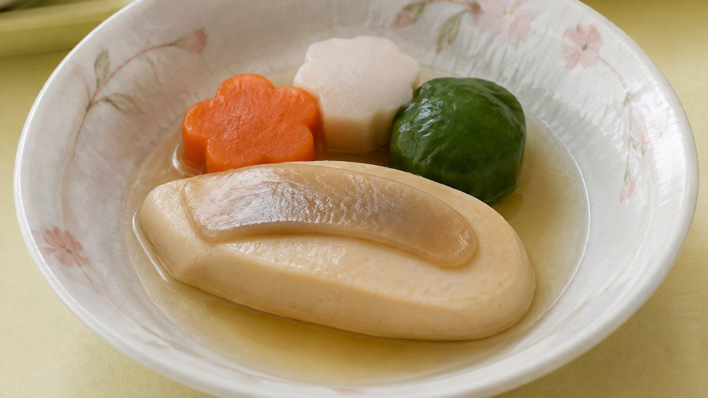
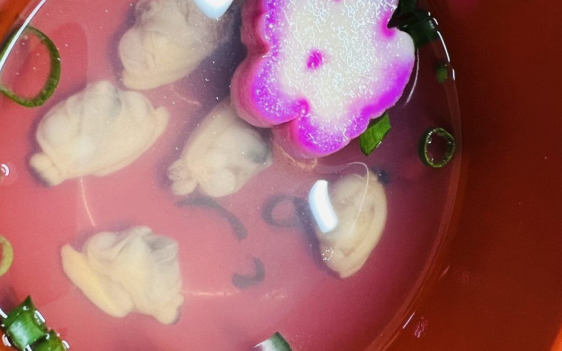
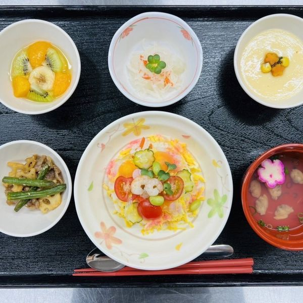
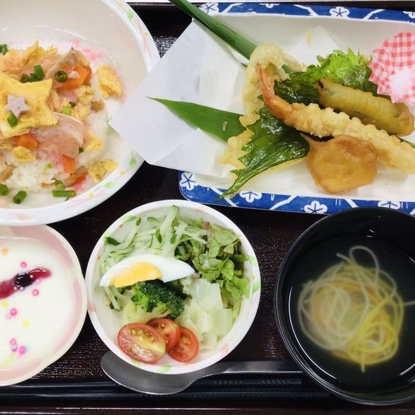
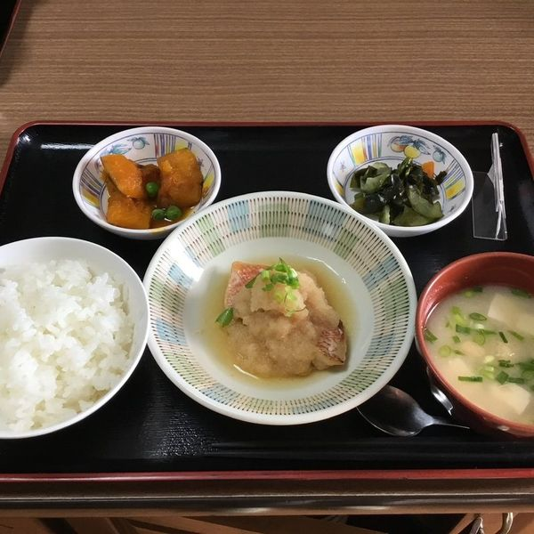
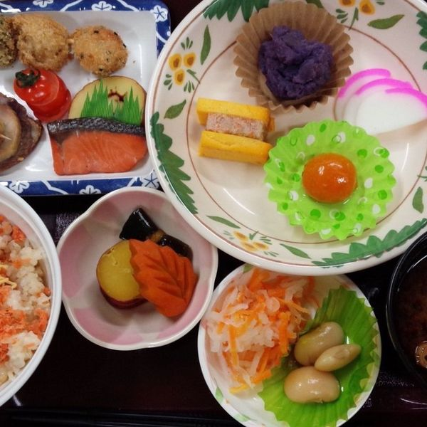

事業内容
大分県内の高齢者施設・病院の厨房業務を受託し、施設の中で毎日の食事を調製・提供しています。
受託している2つの領域
-
高齢者施設給食
特別養護老人ホーム・介護老人保健施設・グループホームなどの厨房業務を受託しています。利用者さまの状態に合わせた食事を、施設内で毎日調製します。
-
病院給食
入院患者さまの治療と回復を支えるため、栄養管理された食事を提供しています。別府市の清瀬病院さまで稼働中です。
企業・社員食堂もご相談ください
現在の受託は高齢者施設・病院ですが、給食委託厨房業務として対応可能です。まずはお気軽にご相談ください。
5段階の食事形態に対応
噛む力・飲み込む力は、利用者さまお一人ごとに違います。同じ献立を、状態に合わせて5段階の形態でご用意します。


- 常食 通常の形態のまま提供します。
- 一口大 ひと口で食べられる大きさに切り分けます。
- 粗刻み 噛みやすいよう粗く刻みます。
- 極刻み さらに細かく刻み、まとまりを持たせます。
- ミキサー なめらかなペースト状にします。
※ 施設によってはムース食にも対応しております。形態の追加や変更については、お気軽にご相談ください。
介護食の工夫
- 噛みやすいように工夫する
- 飲み込みやすいように工夫する
- 塩分を控えめにする
- 栄養素を含む食材を多く使う
実際にお出ししている食事
お出ししている献立の一部です。行事食は毎月ご用意しています。




食で人と人をつなぐ
株式会社JINfoodsは給食委託厨房業務を行っており、食で人と人を繋ぎたいという想いで、それぞれの施設のニーズに合った食事を毎日提供しております。
各施設では豊富なメニューを提供し、身体にやさしく美味しい食事で、食べる喜びや楽しさを感じてもらいたい。そんな思いを込めて、株式会社JINfoodsは誕生しました。
管理栄養士が栄養バランスをしっかり計算し、高齢者の方にふさわしい献立を組み立てています。高齢社会の食生活を支援していきます。
介護食について
食事は生きていくために必要なだけでなく、元気に健康に笑顔で楽しく毎日を送るために欠かせないものです。
続きを読む閉じる
高齢者にとっても、毎日おいしい食事をとることは生きる活力になります。
高齢期になると生活習慣病や身体機能の低下で、食事を楽しめなくなることがあります。弱った身体機能を補いつつ充実した食生活を送るためのひとつに介護食があります。
食の意義
食べ物をエネルギー源として活動している私たちにとって、食事は生きるために必要な行為です。
続きを読む閉じる
単なる栄養摂取にとどまらず、良い食事により精神的な満足感も得られます。多くの人にとって、食事は生きる楽しみの一つといっていいでしょう。
健康上の問題がなく活発に動き回れる若い人々に比べると、筋力低下などで少なからず活動に制限が出てくる高齢者は、日常生活であまり刺激を受ける機会がありません。それだけに、一日三度のおいしい食事が毎日の楽しみになっているという人も大勢います。
高齢者の栄養不足
加齢に伴い顔回りの筋肉が衰え歯が弱くなると、飲み込む力や噛む力が衰えてきます。
続きを読む閉じる
これまでと同じ食べ物をうまく食べることができず、飲み込むときにむせることが増え、食べ物が気管に入って「誤嚥性肺炎」を引き起こすおそれもあります。
また、高齢者は一般的に若い頃よりも食欲が低下するため、やわらかい食材など食べられる物が限られたり、食べる量そのものが減ったりして栄養不足になっていることがあります。
低栄養になると
高齢者は、若い人よりもきちんと栄養バランスを考えなければなりません。食事にこだわらず毎日同じようなものを食べていると、必要な栄養が不足する「低栄養」の状態に陥ります。
その結果、免疫力が低下して風邪をはじめとするさまざまな病気にかかりやすくなります。内臓や腸などの消化器官の働きも低下するため、便秘や下痢を引き起こす可能性があります。便通異常は食欲不振にも繋がり、栄養不足がさらに進んでしまう負のループに陥ります。また栄養不足になると脳にも十分な栄養が行き渡らなくなり、認知機能の低下をもたらすおそれも指摘されています。
受託している施設をご覧いただけます
大分市・豊後大野市・別府市の8施設で稼働しています。
お食事サービスの導入・見直しを
ご検討の担当者さまへ
試食のご依頼、サービスに関するご相談、お見積りなど、お気軽にお問い合わせください。